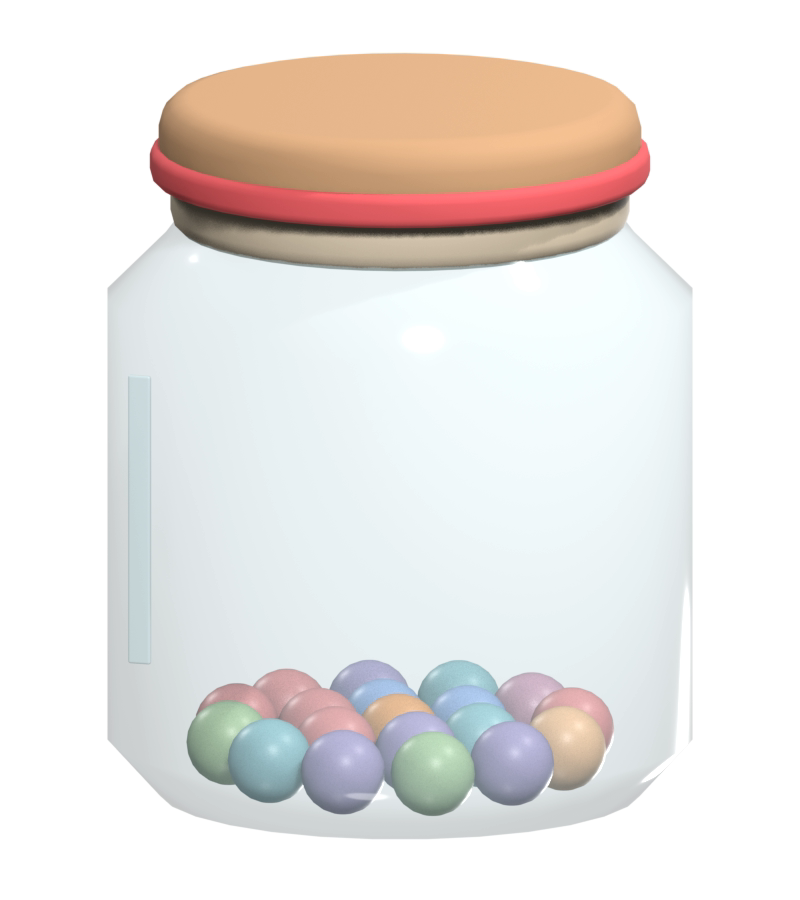
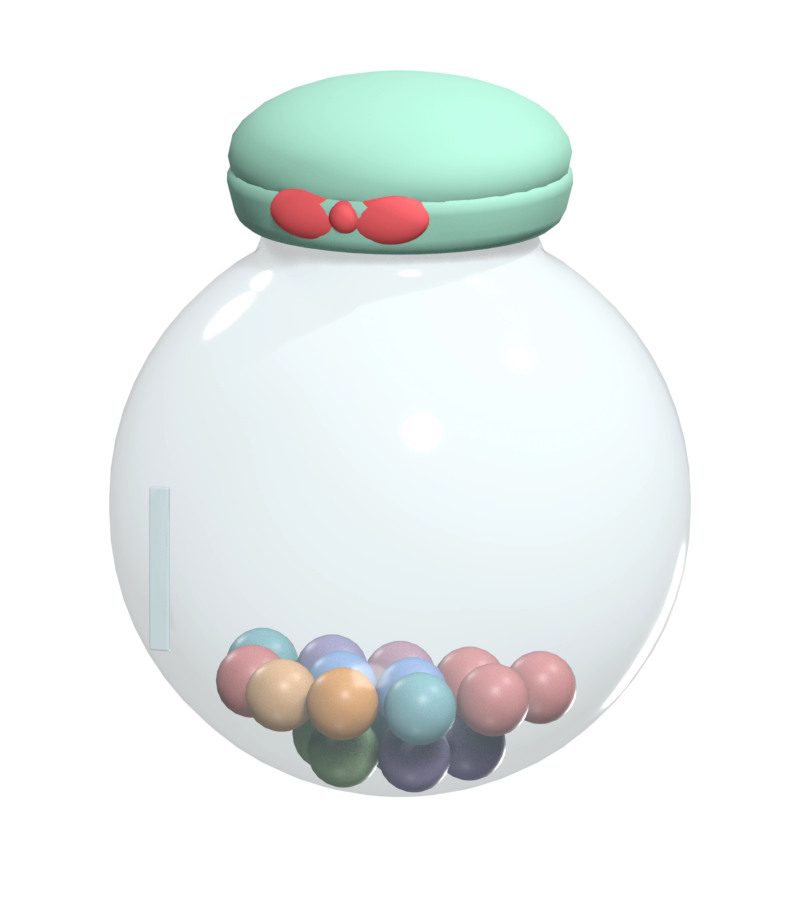
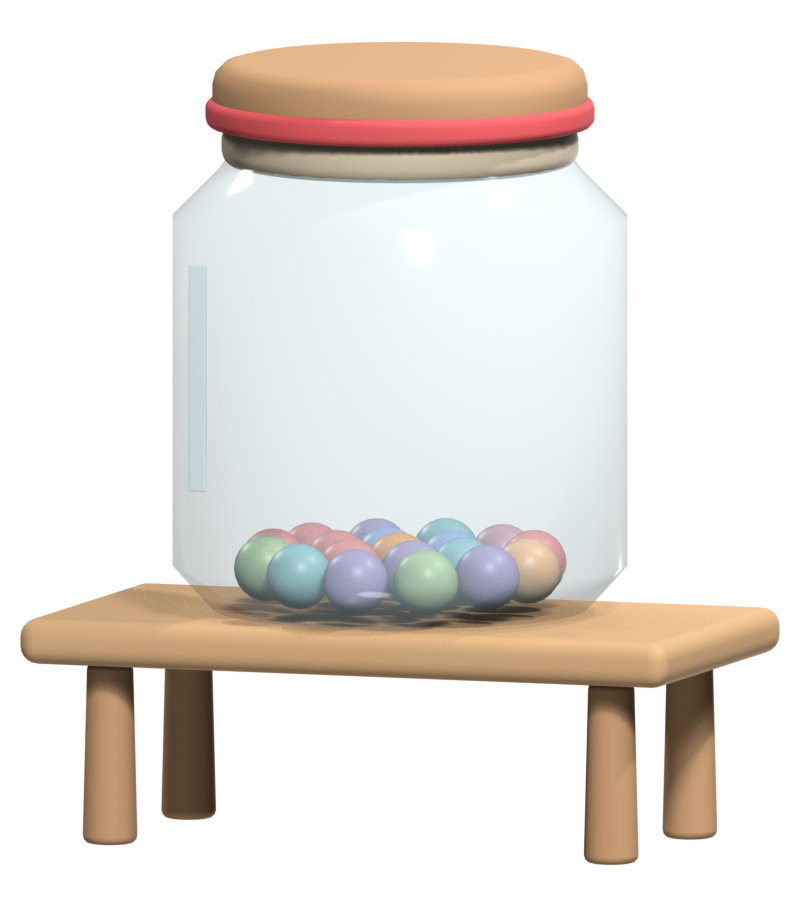

<!doctype html><html><head><meta charset="utf-8"><link rel="stylesheet" href="../records_mock/common.css">
<style>
.phone{background:#fff}
.top{display:flex;justify-content:space-between;align-items:flex-start}
.find{background:#F7F6F3;border-radius:99px;padding:8px 14px;font-weight:700;font-size:14px}
.stage{height:300px;display:flex;align-items:center;justify-content:center;position:relative;margin:4px 0 10px}
.stage img.j{height:290px}
.old{width:150px;height:170px;border:5px solid #d9c9b1;border-top-width:12px;border-radius:26px 26px 40px 40px;background:#fffaf2;display:flex;flex-wrap:wrap-reverse;align-content:flex-start;padding:8px;gap:4px}
.old i{width:15px;height:15px;border-radius:9px;display:block}
.card{background:#F7F6F3;border-radius:22px;padding:14px 16px;font-size:15px}
.card b{font-size:20px;display:block;margin:4px 0}
.scene{border-radius:28px;background:linear-gradient(#EFE6DA 0 64%,#D9B98F 64% 100%);overflow:hidden}
.scene .hp{position:absolute;height:210px;left:6px;bottom:14px}
.scene img.j{height:200px;position:absolute;right:30px;bottom:18px}
.lab{position:absolute;left:12px;top:10px;font-size:12px;font-weight:800;background:#fff;border-radius:99px;padding:4px 10px;color:#1F5F50}
</style></head><body>
<div class="row" id="row"></div>
<script>
const cols=['#9ccfd8','#f6b26b','#a4c2f4','#b4a7d6','#f9cb9c','#d5a6bd','#ea9999','#b6d7a8'];
const V=[
 ['지금','<div class="old">'+Array.from({length:19},(_,i)=>`<i style="background:${cols[(i*5+3)%8]}"></i>`).join('')+'</div>','평면 테두리 그림. 방·단짝은 둥근 3D라 여기만 아이콘처럼 납작해 보여.'],
 ['A · 방 유리장 병 그대로 (3D)','','방 유리장에 있는 그 병을 크게. 코르크 뚜껑 + 코랄 띠. 방과 유리병 탭이 같은 물건이 돼.'],
 ['B · 둥근 사탕병 + 천 뚜껑 (3D)','','배가 둥근 병, 민트 천 뚜껑과 리본. 단짝처럼 통통하고 말랑한 모양. 방 유리장 병도 이 모양으로 다시 그려야 해.'],
 ['C · 단짝 옆 탁자 위 병 (장면)','<div class="stage scene" style="width:100%;margin:0"><span class="lab">단짝 동작이 여기서 움직여</span></div>','방처럼 작은 장면. 기록하면 단짝이 구슬을 넣는 동작을 할 수 있어. 가장 예쁘지만 새 그림·동작이 제일 많이 필요해.'],
];
const row=document.getElementById('row');
V.forEach(([t,body,cap])=>{row.insertAdjacentHTML('beforeend',`<div class="col"><div class="cap">${t}</div><div class="phone">
<div class="top"><div><div class="h">나의 작은 승리 유리병</div><div class="sub">지금까지 구슬 19개. 구슬은 줄어들지 않아.</div></div><span class="find">찾기</span></div>
<div class="stage">${body}</div>
<div class="card"><span class="muted" style="font-size:13px">이번 주 유리병</span><b>너는 9가지를 해냈어</b></div>
<div class="tabbar"><span>방</span><span class="on">유리병</span><span>꾸미기</span><span>설정</span></div></div><div class="capsub">${cap}</div></div>`)});
</script></body></html>
